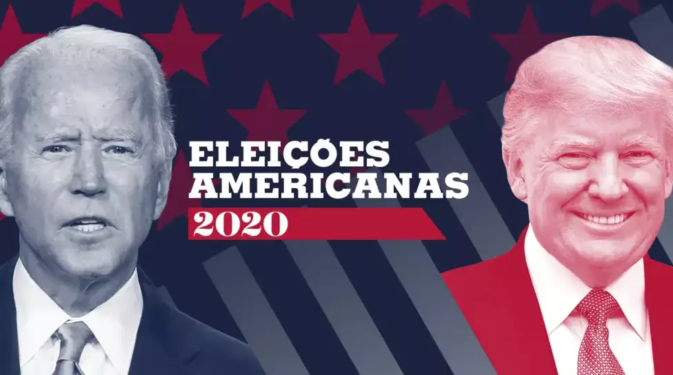
最近一个月里，除了工作忙，就是美国大选了。
从刚开始过山车式的刺激，再到现在陷入司法战后的马拉松式的长跑。
这场大选，让无数人捶胸顿足，彼此分裂。
在很多人眼中这似乎成为了关乎人类政治文明的生死一战。
我自己一直审慎地观察各方呈现出来的观点和事实。
之所以审慎，是因为不懂。
所以，这段时间我翻出了一部HBO历史剧，希望能够对灯塔国的建国初心有更深的认识，以此来观照今日的局面。
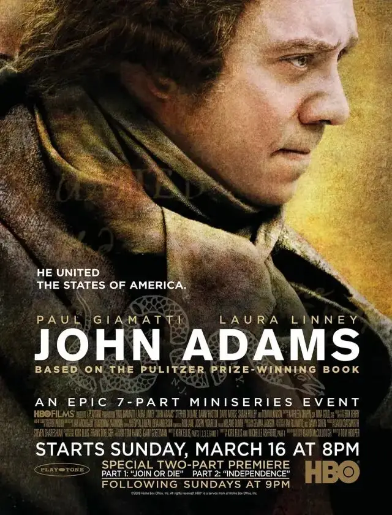
这部剧便是《约翰.亚当斯》。
豆瓣9.1，根据获普利策大奖的同名畅销书改编。
历史还原度高，制作团队阵容强大。
当年收获13项艾美奖和4项金球奖。
对于约翰.亚当斯，他在国内的知名度远低于华盛顿和杰斐逊，甚至很多人会对他感到陌生。
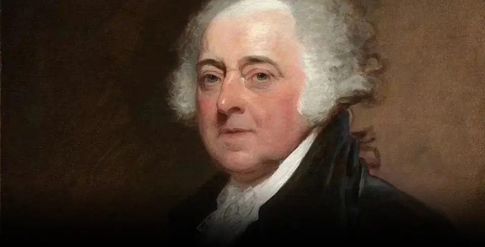
但约翰.亚当斯是美国公认建国元勋，是美国第一任副总统，第二任总统，以及进驻白宫的第一任总统。
借着他的视角，我们可以非常深入地对美国建国初期的顶层设计进行了解。
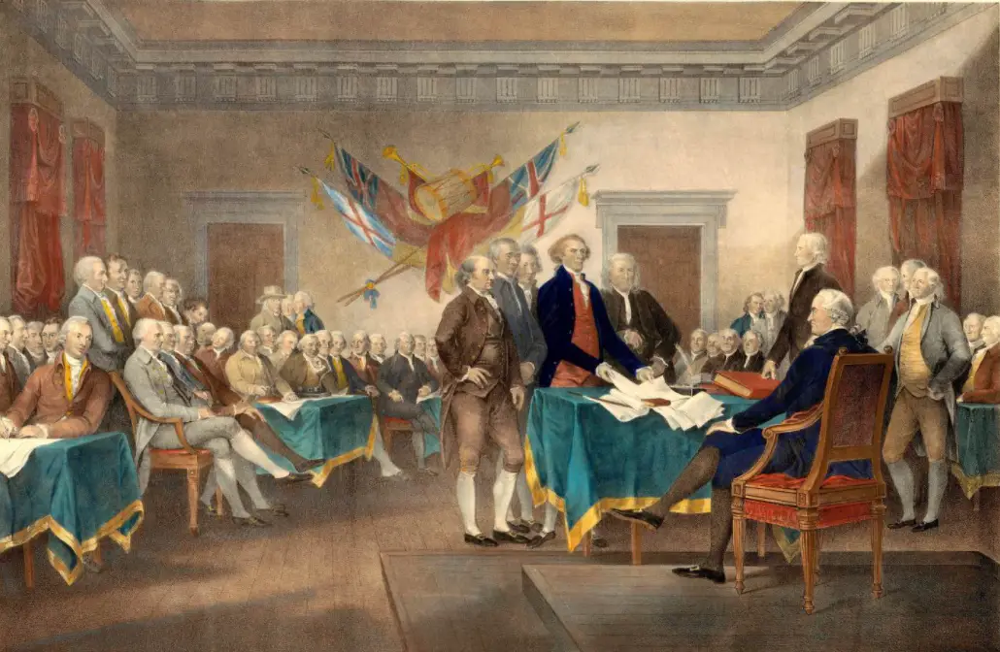
-01- 立场还是真相
这部宏大的历史剧开始于一个细小的故事。
1770年，波士顿，议会广场。
一群英国兵朝着人群开枪，数名群众无辜惨死，其中包括孩童。
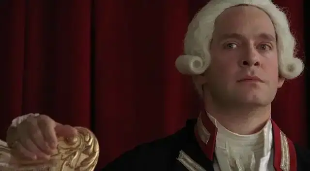
当时，美国还是英国的殖民地，在贸易、政治权利以及生活的方方面面都遭遇着英国的压迫。
再加上这场惨案，一时，美国人对于英国的愤怒和仇恨席卷全城。
每个人恨不得立马手撕开枪的英国人。
可开枪的英国人认为自己很无辜，他们坚称自己是自卫开枪，指挥官也从未主动下令开枪。
可这在受害者心态的美国人面前，是纯净无比的谎言。
这样的局面下，没有一个律师敢接这个案子，去担任英国兵的辩护律师。
因为如果这样做，就是在与整座城的人民为敌。
这时，英国兵想到了约翰.亚当斯，一个以坚持事实真相而著称的律师。
他虽然也是众多被压迫的美国人中的一名，一样对英国殖民者有着愤怒。
可他坚信：律师是自由国家嫌疑人最不该缺的东西。
所以，他顶着成为叛徒的骂名成为了英国兵的辩护律师。
在法庭上，围观的人民愤怒地敲打着栏杆，恨不得立马向英国兵宣判他们的罪名。
面对被愤怒情绪主导的群众。
约翰亚当斯冷静地告诉大家：波士顿人的冤情与本案无关。
言外之意，约翰亚当斯想要让大家回归事实和理性，不要将与本案无关的情绪发泄在本案中，这对那群英国人很不公平。
随着证人对峙的开始，约翰.亚当斯注意到，有些证人的眼神一直在躲闪，他们可能被众怒绑架而撒了谎。
最后，约翰.亚当斯直接来到眼神躲闪最厉害的一位证人面前，向他拷问，真的是英国指挥官下令开枪的么。
证人内心非常纠结，迟迟没有回应约翰.亚当斯的质问。
最终，在约翰.亚当斯的鼓励下，证人终于说出真相，原来当时是一帮躲在人群中美国人在主动惹事。
故意煽动群众拿东西砸英国士兵，并再三向英国士兵挑唆，让他们开枪。
但英国士兵始终没有开枪，最后是一名英国兵被砸摔倒在地，他的枪也因此而意外走火。
一时，被煽动的群众一拥而上，最终英国兵不得不开枪自卫。
面对这样的真相，约翰.亚当斯总结陈词，说出了那段极为著名的话：
事实是顽固的东西，随我们怎样期望，怎样偏向，怎样情不自禁，也改变不了事实和证据。
法律这东西，一方面漠视嫌疑犯的哭嚎和哀告，但另一方面，他是聋的，对群众的呼声充耳不闻。
这段话表达了约翰.亚当斯对于真相、法治的信仰，以及对于多数人暴力的警惕。
不论舆情多么一边倒，不论大多数的期望是什么，都不能改变事实和真相。
最终，陪审团给出了对本案英国士兵的判决：无罪释放。
这场胜利不仅是约翰.亚当斯的胜利，更是当时美国人的胜利，虽然心里有一百个不情愿，但他们的法制精神还是让他们选择臣服于真相。
而这群人，也将会在不久的将来一同缔造称雄世界的美利坚合众国。
-02- 急死人的独立
关于美国独立战争的过程，这部剧有非常细致的呈现。
那段历史并非像我们所预想的同仇敌忾，一同奋战到独立。
更多的是吵架、吵架，再吵架。
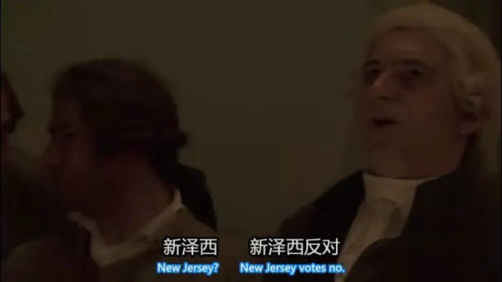
1773年，当时英国政府颁布《茶叶法案》，赋予了东印度公司直接向美国出口茶叶的垄断地位。
一方面免掉了进口税，东印度公司的茶叶可以低价进入美国，极大地冲击了本土茶叶市场。
另一方面又向北美殖民地征收茶叶税。
不仅强买强卖，还强征税。
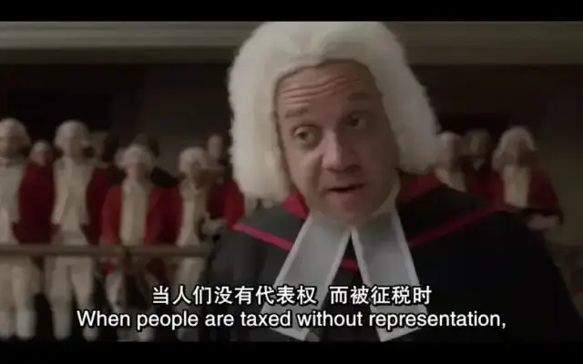
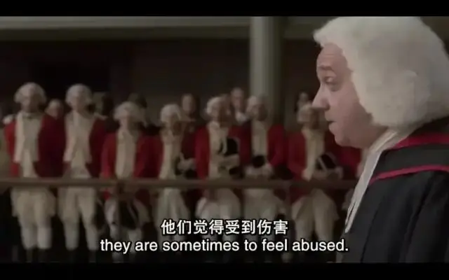
这遭到了当时美国人的愤怒和抗议，并最终导致发生了波士顿倾茶事件。
一群美国人跑到货运船上，将几顿茶叶倒入波士顿港湾。
1774年，面对殖民地的挑战，英国政府推出强制法令，剥夺了马萨诸塞州的自治权和很多以前一直具有的权利。
面对英国的强势压迫，最终12个殖民地（乔治亚州未参加）在费城召开第一届大陆会议（美国国会前身）。
56名代表参会，华盛顿、杰斐逊、汉密尔顿、富兰克林等大佬纷纷登场。
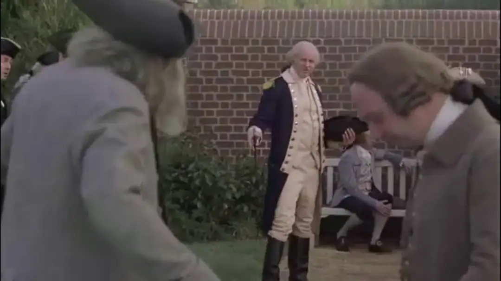
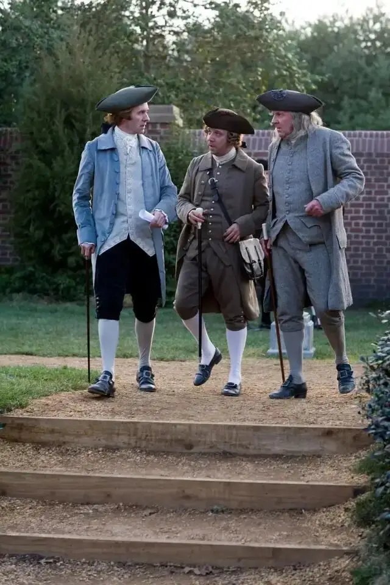
△从左到右，托马斯.杰斐逊、约翰.亚当斯、富兰克林，被称为独立三杰
群星荟萃，迎来的不是大干一场，而是漫长的“吵架”。
约翰.亚当斯在会上最活跃，是会议的灵魂人物。
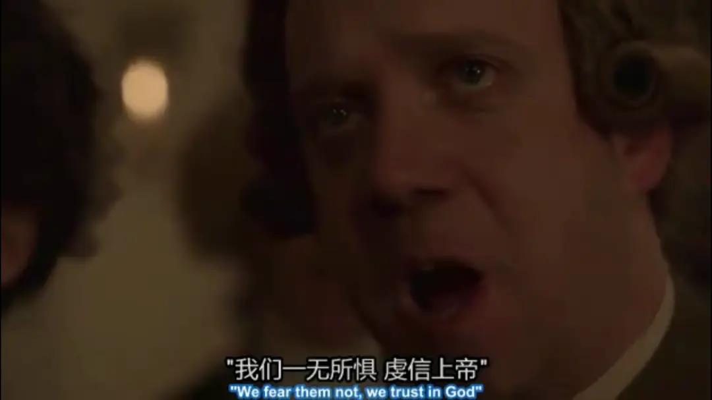
他坚持时不我待，不要幻想英国政府回心转意会善待美国，要坚持彻底独立。
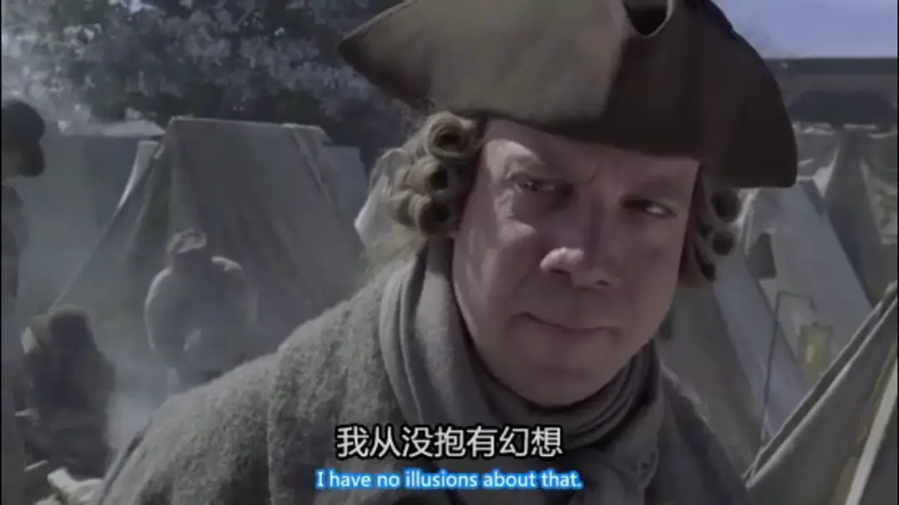
有人则批判他激进，认为美国太弱小，根本没有办法与英国政府开展，寄希望于向英国国王请愿。
在不同的立场之间，有人唇枪舌战，有人暗中诋毁，还有人墙头草般倒来倒去，更有人沉默寡言地观望。
就这样从第一次开会到发表独立宣言，这群人足足花了近两年的时间。
这种决策效率，在我们这种习惯了统一指挥、齐头并进的民族眼中，简直捉急的像个笑话。
但正是这两年的争吵里，寄希望向英国国王请愿的幻想破灭。
冰冷的现实，让他们必须为自己，为子孙后代做出抉择。
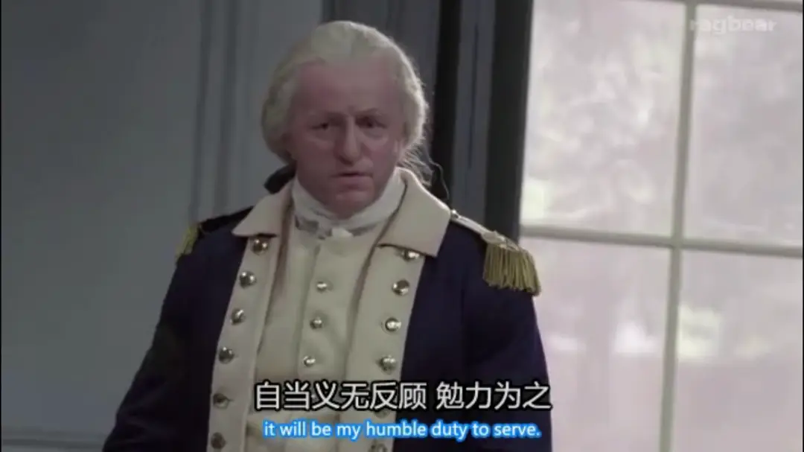
这个经过无数场辩论后的抉择便是彻底与英国独立，这个抉择来自于三个层面。
首先是，人人生而（被造）平等，这是这场独立最为重要且最为神圣的原因。
天赋人权，而非英国政府赋予美国人民权力。
因此，在一些处境下，美国人民必须要忠实于造物主，而非忠实于英国国王和政府。
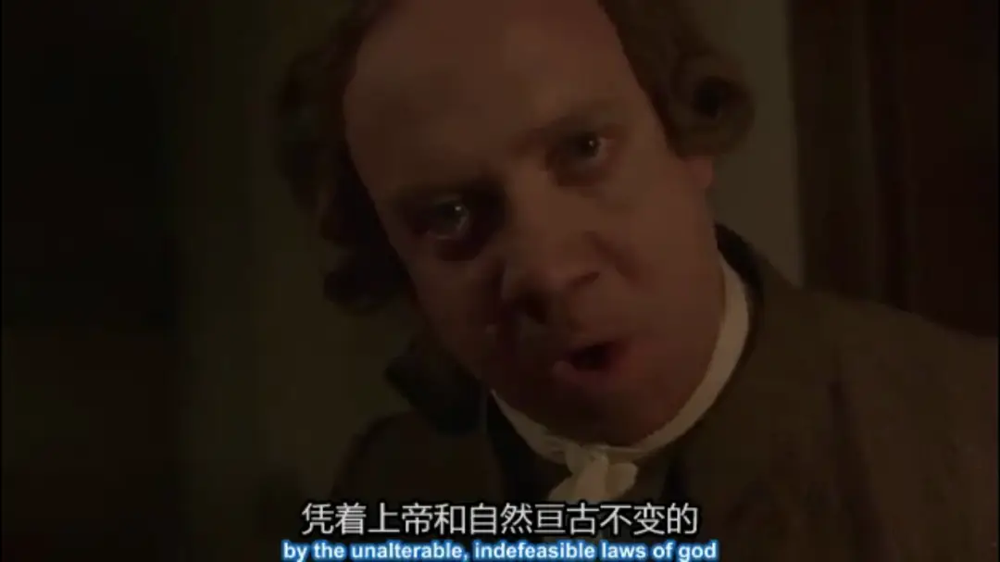
第二个层面，是人民与政府的关系。
政府的存在是为保障造物主所赐权力而设立的。
政府是在人民委托和授权下成立的，一旦政府违背了这个初衷，便没有了存在的合法性。
为了证明英国政府已经背离了这一使命，《独立宣言》中列举了英国政府的种种罪行。
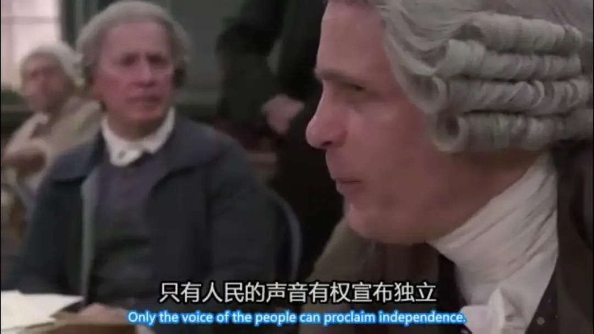
第三个层面，这场独立是对正义的忠诚和表达。
既然英国政府违背了对造物主、对美国人民的承诺，出于人类对于公义的天然渴望，美国人民必须要与英国政府划清界限，寻求独立。
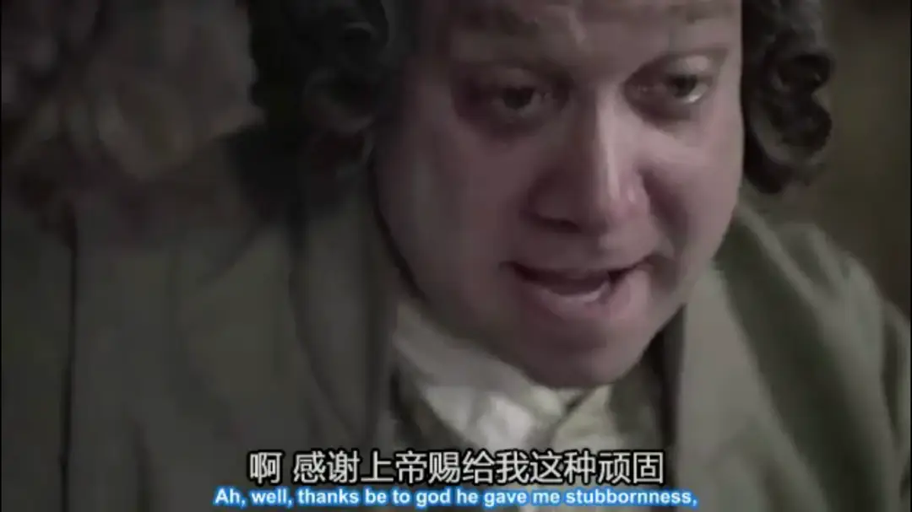
这便是美国诞生的初心。
出于信仰和义怒。
出于对人之基本权利的追求。
出于人民对政府的主导，也出于对多数人暴政的警惕。
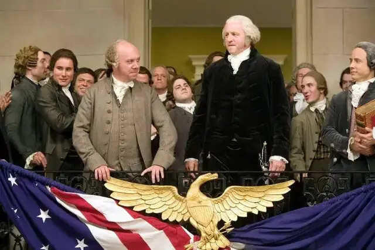
-03- “野蛮”选战
尽管美国的诞生和独立宣言让全人类振奋。
但我们必须要承认现实和理想之间的巨大差距，甚至背道而驰，比如美国当时对于黑奴制度的沉默。
尤其是总统选举过程中，充斥着各种互相攻击、诋毁和阴险。
当我们将《独立宣言》和美国总统的诞生放置在一起时，更是会觉得吃惊和咋舌。
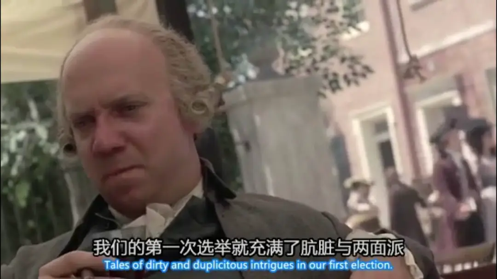
美国建国初期，华盛顿总统期间，副总统约翰.亚当斯，国务卿托马斯.杰斐逊以及财务部长汉密尔顿之间的冲突便在暗流涌动。
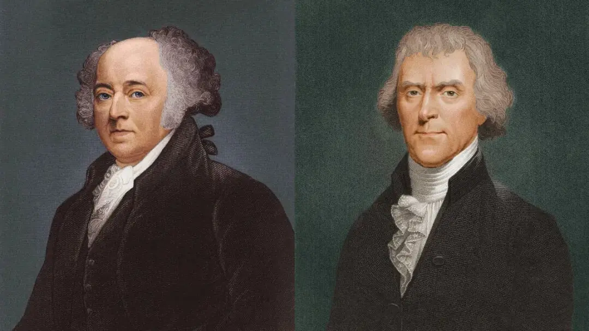
当华盛顿告老还乡后，剑拔弩张的选战便拉开了序幕。
当时约翰.亚当斯就像今天的川建国一样自信满满，觉得没有谁能比自己更有资格担任第二任总统。
可他横冲直撞、敢怒敢言的性格着实也得罪了不少人，最后的选举结果，约翰.亚当斯仅以一票的优势当选总统。
而他最大的竞争对手托马斯.杰斐逊成为了他的副总统。
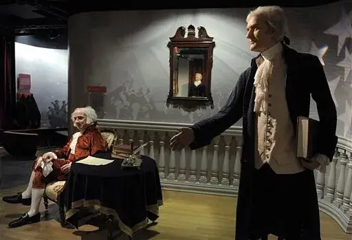
他们两人的关系非常有意思。
亚当斯擅长雄辩，杰斐逊则文笔了得，他们曾在美国走向独立的过程中是互相配搭、最为紧密的战友。
杰斐逊主笔《独立宣言》，亚当斯也参与其中。
美国独立后，约翰.亚当斯成为了驻英大使，托马斯.杰斐逊则成为了驻法大使。
两人可以说是惺惺相惜的老战友。
但二人的政治思想却存在着很大的差异。
比如在两人担任大使期间，美国国内发生了一场起义，原因是独立战争后，美国欠下大量债务，所以退伍军人并没有很好的待遇，还面临税收的压力。
因为对现状的不满，当时有一群老兵便发动了起义。
围绕这场起义，杰斐逊认为这是一场对抗暴政的反抗运动，虽然具有破坏性，但是这是民主之路必须要经历的路。
而在约翰.亚当斯眼中，这是一场乌合之众的骚乱。
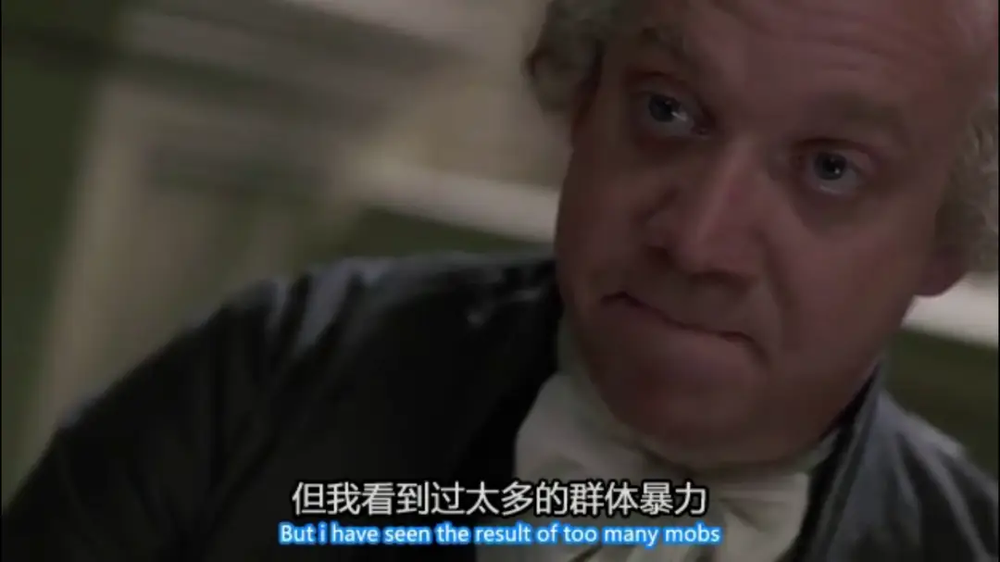
这种分歧直接导致亚当斯在担任总统期间，两人之间发生了剧烈的矛盾。
当时法国大革命爆发，国王路易十六被砍头，英法爆发冲突。
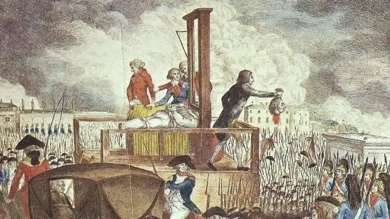
当时美国舆论普遍同情法国的革命，很多人主张美国政府应该和法国站队，一同反抗英国。
可亚当斯认为美国实力弱小，要尽量避免与英国发生战争。
而面对路易十六被砍头的事情，亚当斯劝诫美国人：不要受激情的驱使，即便是民主，也必须受制约。
在亚当斯的政治理念中，他从不迷信民主，对绝对民主非常警惕，他认为：（绝对的）民主从来不长久，很快就开始自暴自弃、甚至自杀。
所以，亚当斯主张强化中央政府的集权，以维持美国的稳定。
可在杰斐逊看来，“自由之树须靠暴君的鲜血来浇灌”。
所以，他同情法国大革命，主张美国政府竭力去帮助法国。
而对于美国政体的看法，他主张建立自由的共和国，主张强化州自治的权力，弱化中央政府的权力。
面对杰斐逊对法国大革命的支持，亚当斯曾对一名英国记者说：人类最终会发现，假如大多数人失去控制，他们和不受约束的暴君一样会变得专制残暴。
两人之间矛盾的顶点是1800年的选战。
杰斐逊为了与亚当斯竞选总统，从政治理念的冲突上升到了人身攻击。
杰斐逊一派说亚当斯是个令人作呕的书呆子、可憎的伪君子。
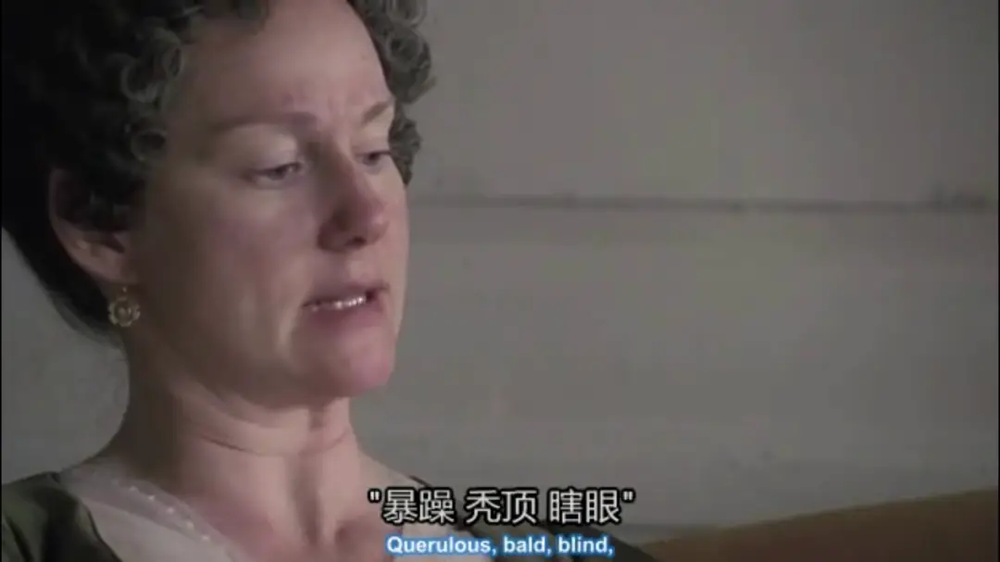
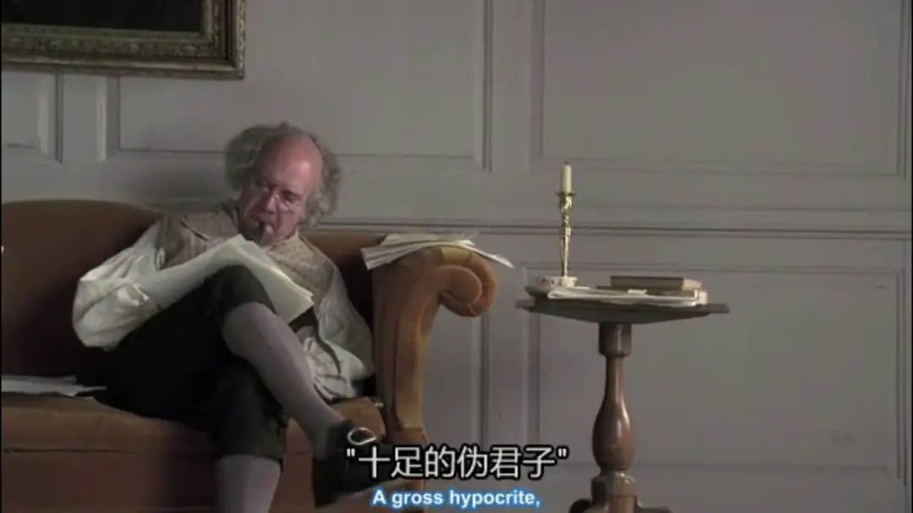
而亚当斯一派则攻击杰斐逊为“卑鄙、未开化的家伙，是有一半印第安血统的母亲的儿子，是来自弗吉尼亚的黑白混血的父亲的种。”。
在两人斗的昏天暗地的时候，与亚当斯同属一个政党的汉密尔顿，因为和亚当斯的不合而反水。
汉密尔顿竟然还写了个专门攻击亚当斯的小册子：《美国总统约翰·亚当斯的公共行为和性格》。
这种背叛以及向对手递刀的举动，对当时的亚当斯打击不小。
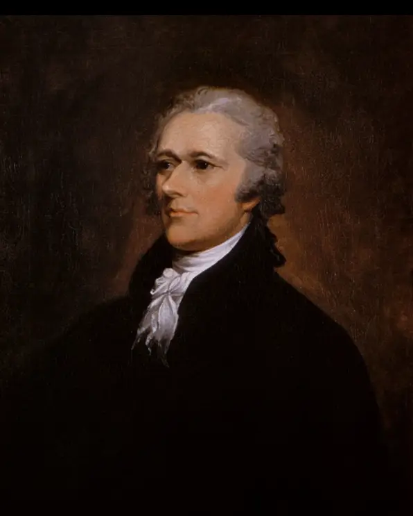
当时的媒体和今天也没有太大区别，是政党斗争的工具，不仅到处煽风点火，还炮制各种阴谋论，甚至说华盛顿是英国在美国扶植起来的利益代表。
最终，因为各样原因，约翰.亚当斯未能连任。
可这场选战并未结束，托马斯.杰斐逊和阿龙·伯尔竟然获得相同选票。
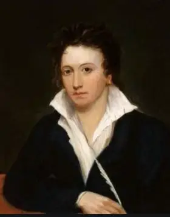
△阿龙·伯尔，美国政治家，美国独立战争英雄，美国民主共和党成员，曾任美国参议员（1791年-1797年）、美国副总统（1801年-1805年）。
为此，美国众议院又进行了36轮投票才最终将杰斐逊选为总统，伯尔担任副总统。
选战之激烈放在今天也很让人吃惊。
最终在其中起决定性作用的是汉.密尔顿，他其实都不希望两位候选人当选总统，但是因为他和阿龙·伯尔有非常深的积怨，所以最终帮了杰斐逊一把。
阿龙·伯尔为此更是与汉.密尔顿不共戴天。
最终，两人的矛盾甚至发展到要通过开枪决斗的方式解决。
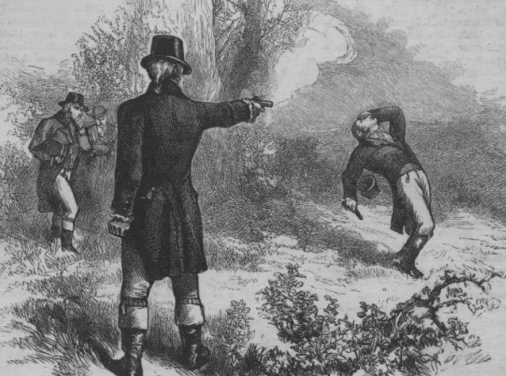
就这样，美国宪法起草人之一、美国第一任财务部长、美国初期金融及财政制度的奠基人，在决斗中被伯尔用枪打中，并在第二天去世......
而上演以上各种明争暗斗的正是如今世界第一强国的开国元勋们。
这在我们看来简直是不可思议的。
今天，在深度围观了川建国和拜振华之战后的我们，这种感受是非常普遍的。
很多人会觉得，这就是灯塔国？
各种消息满天飞，让人眼花缭乱，选个总统搞的鸡飞蛋打？
可，这就是选战，就像战争一样，会利用各种手段来攻击对方。
美国两百多年，都是这样吵过来的。
之所以能吵得起来，是因为一方还未取得对另一方的压倒性胜利。
也未曾有人或某个组织可以独霸话语权。
所以总会有不同的声音需要选民去判断。
这是一种我们非常陌生的社会形态。
在这部作品中，建国元勋虽然成就显著，但是他们的性格缺点和野心也暴露无遗。
可能我们太习惯一种被统一过、被对齐过、被美化过的话语体系，我们理想的先贤虽不至于一出生就紫霞满天般夸张，但至少是没有明显硬伤的谦谦君子。
可如果我们拿现实去观照一下，就知道这样的期待是不切实际的。
每一个人，不论他有多么伟大的成就，他一样会有自己不擅长的地方，一样可能有不光彩的过去，一样可能处在随时奔溃的家庭关系中。
而要竞选为一个大国的总统，这些都将会成为竞争对手和媒体攻击的弱点。
而作为一个竞选者，也不得不拉下脸去攻击对方。
因为，当你举手选择要参与竞选的时候，这便不是一个人的战斗，而是肩负着无数民意的战斗。
美国便是在宪法的框架下，通过各种博弈和争斗在一直在向前运转。
这种互不相让的争斗也是必须的。
一方面，这样的竞选可以将候选人从个人到家庭，从品行到能力，从个人账户到工作表现进行一次非常苛刻严谨的扫描。
这样的扫描可以将领袖拉下神坛，很大程度的避免伪君子的诞生，从而避免领袖自我封神的风险。
另一方面，这样的竞争会推进美国在冲突和差异中达到动态的平衡。
美国既需要杰斐逊那样充满魅力的对民主的理想主义，也需要亚当斯这样对人性黑暗面保持清醒认识并通过法律和分权来制衡的现实主义。
当一方过量要失去平衡时，就会有另一方出来纠偏。
就像是地心引力一样，在局部我们会感受到地动山摇的失衡。
但放在更大的视野，从两百多年的历史来看，这种失衡并未远离地心引力，飘向更远的地方。
这个地心引力便是美国宪法。
在朴树迷离的大选面前，川普打响的司法战，便是对这一“地心引力”的信仰。
就像亚当斯所言，大选的结果是一块顽固的石头，不论我们怎么期望，怎样偏向，怎样情不自禁，不论媒体怎么宣传，也改变不了事实和证据。
而法律将会像高射灯一样，会帮助我们拨开云雾，将目光聚焦到那块石头上面。
而当这块石头被揭晓的时候，我们心里的石头也会跟着落地。
这里没有挑逗你眼目情欲的小鲜肉
也没有挑动你肉体情欲的段子
更没有膨胀你今生骄傲的鸡血
我们只在乎那些最质朴真诚的作品
在那里我们才能恢复真正的想象力
我们也坚信这才是我们真正需要的

ID:Six_hundred_hits
长按二维码，一键关注
【六百击】
电影评论
尽情分享朋友圈

微信二维码打赏通道